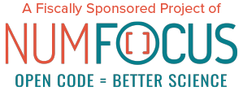

PETSc 3.20#
PETSc, the Portable, Extensible Toolkit for Scientific Computation, pronounced PET-see (/ˈpɛt-siː/), is for the scalable (parallel) solution of scientific applications modeled by partial differential equations (PDEs). It has bindings for C, Fortran, and Python (via petsc4py). PETSc also contains TAO, the Toolkit for Advanced Optimization, software library. It supports MPI, and GPUs through CUDA, HIP, Kokkos, or OpenCL, as well as hybrid MPI-GPU parallelism; it also supports the NEC-SX Tsubasa Vector Engine. Immediately jump in and run PETSc code Tutorials, by Mathematical Problem.
PETSc is developed as open-source, requests and contributions are welcome.
News: PETSc is associated with NumFOCUS, a 501(c)(3) nonprofit supporting open code and reproducible science, through which you can help support PETSc.
News: PETSc 2024 Annual Meeting
The 2024 Annual Meeting will take place May 23, 24 in Cologne, Germany.
News: Book on numerical methods using PETSc
PETSc for Partial Differential Equations: Numerical Solutions in C and Python, by Ed Bueler.
Main Topics#
Toolkits/libraries that use PETSc#
ADflow An open-source computational fluid dynamics solver for aerodynamic and multidisciplinary optimization
BOUT++ Plasma simulation in curvilinear coordinate systems
Chaste Cancer, Heart and Soft Tissue Environment
code_aster open-source general purpose finite element code for solid and structural mechanics
COOLFluiD CFD, plasma and multi-physics simulation package
DAFoam Discrete adjoint solvers with OpenFOAM for aerodynamic optimization
DEAL.II C++ based finite element simulation package
DUNE-FEM Python and C++ based finite element simulation package
FEniCS Python based finite element simulation package
Firedrake Python based finite element simulation package
Fluidity a finite element/volume fluids code
FreeFEM finite element PDE solver with embedded domain specific language
hIPPYlib FEniCS-based toolkit for solving deterministic and Bayesian inverse problems governed by PDEs
libMesh adaptive finite element library
MFEM lightweight, scalable C++ library for finite element methods
MLSVM, Multilevel Support Vector Machines with PETSc.
MoFEM, An open source, parallel finite element library
MOOSE - Multiphysics Object-Oriented Simulation Environment finite element framework, built on libMesh.
OOFEM object-oriented finite element library
OpenCarp Cardiac electrophysiology simulator
OpenFOAM Available as an extension for linear solvers for OpenFOAM
OpenFPM framework for particles and mesh simulation
OpenFVM finite volume based CFD solver
PermonSVM support vector machines and PermonQP quadratic programming
PetIGA A framework for high performance Isogeometric Analysis
PHAML The Parallel Hierarchical Adaptive MultiLevel Project
preCICE - A fully parallel coupling library for partitioned multi-physics simulations
PyClaw A massively parallel, high order accurate, hyperbolic PDE solver
SLEPc Scalable Library for Eigenvalue Problems
Citing PETSc#
You can run PETSc programs with the option -citations to print appropriate citations for the software and algorithms being used in that program.
For general citations on PETSc please use the following:
@Misc{ petsc-web-page,
author = {Satish Balay and Shrirang Abhyankar and Mark~F. Adams and Steven Benson and Jed
Brown and Peter Brune and Kris Buschelman and Emil~M. Constantinescu and Lisandro
Dalcin and Alp Dener and Victor Eijkhout and Jacob Faibussowitsch and William~D.
Gropp and V\'{a}clav Hapla and Tobin Isaac and Pierre Jolivet and Dmitry Karpeev
and Dinesh Kaushik and Matthew~G. Knepley and Fande Kong and Scott Kruger and
Dave~A. May and Lois Curfman McInnes and Richard Tran Mills and Lawrence Mitchell
and Todd Munson and Jose~E. Roman and Karl Rupp and Patrick Sanan and Jason Sarich
and Barry~F. Smith and Stefano Zampini and Hong Zhang and Hong Zhang and Junchao
Zhang},
title = {{PETS}c {W}eb page},
url = {https://petsc.org/},
howpublished = {\url{https://petsc.org/}},
year = {2023}
}
@TechReport{ petsc-user-ref,
author = {Satish Balay and Shrirang Abhyankar and Mark~F. Adams and Steven Benson and Jed
Brown and Peter Brune and Kris Buschelman and Emil Constantinescu and Lisandro
Dalcin and Alp Dener and Victor Eijkhout and Jacob Faibussowitsch and William~D.
Gropp and V\'{a}clav Hapla and Tobin Isaac and Pierre Jolivet and Dmitry Karpeev
and Dinesh Kaushik and Matthew~G. Knepley and Fande Kong and Scott Kruger and
Dave~A. May and Lois Curfman McInnes and Richard Tran Mills and Lawrence Mitchell
and Todd Munson and Jose~E. Roman and Karl Rupp and Patrick Sanan and Jason Sarich
and Barry~F. Smith and Stefano Zampini and Hong Zhang and Hong Zhang and Junchao
Zhang},
title = {{PETSc/TAO} Users Manual},
institution = {Argonne National Laboratory},
number = {ANL-21/39 - Revision 3.20},
doi = {10.2172/2205494},
year = {2023}
}
@InProceedings{ petsc-efficient,
author = {Satish Balay and William~D. Gropp and Lois Curfman McInnes and Barry~F. Smith},
title = {Efficient Management of Parallelism in Object Oriented Numerical Software
Libraries},
booktitle = {Modern Software Tools in Scientific Computing},
editor = {E. Arge and A.~M. Bruaset and H.~P. Langtangen},
publisher = {Birkh{\"{a}}user Press},
pages = {163--202},
year = {1997}
}
For petsc4py usage please cite
@Article{ dalcinpazklercosimo2011,
title = {Parallel distributed computing using Python},
author = {Lisandro D. Dalcin and Rodrigo R. Paz and Pablo A. Kler and Alejandro Cosimo},
journal = {Advances in Water Resources},
volume = {34},
number = {9},
pages = {1124 - 1139},
note = {New Computational Methods and Software Tools},
issn = {0309-1708},
doi = {10.1016/j.advwatres.2011.04.013},
year = {2011}
}
For PETSc usage on GPUs please cite
@Article{ mills2021,
title = {Toward performance-portable {PETS}c for {GPU}-based exascale systems},
journal = {Parallel Computing},
volume = {108},
pages = {102831},
year = {2021},
issn = {0167-8191},
doi = {https://doi.org/10.1016/j.parco.2021.102831},
url = {https://www.sciencedirect.com/science/article/pii/S016781912100079X},
author = {Richard Tran Mills and Mark F. Adams and Satish Balay and Jed Brown and Alp Dener
}
For PetscSF – parallel communication in PETSc – please cite
@Article{ petscsf2022,
author = {Zhang, Junchao and Brown, Jed and Balay, Satish and Faibussowitsch, Jacob and
Knepley, Matthew and Marin, Oana and Mills, Richard Tran and Munson, Todd and
Smith, Barry F. and Zampini, Stefano},
journal = {IEEE Transactions on Parallel and Distributed Systems},
title = {The {PetscSF} Scalable Communication Layer},
year = {2022},
volume = {33},
number = {4},
pages = {842-853},
}
If you use the TS component of PETSc please cite the following:
@TechReport{ abhyankaretal2018,
author = {Shrirang Abhyankar and Jed Brown and Emil M. Constantinescu and Debojyoti Ghosh
and Barry F. Smith and Hong Zhang},
title = {{PETSc/TS}: {A} Modern Scalable {ODE/DAE} Solver Library},
journal = {arXiv e-preprints},
eprint = {1806.01437},
archiveprefix = {arXiv},
year = {2018},
}
If you utilize the TS adjoint solver please cite
@Article{ zhang2022tsadjoint,
author = {Zhang, Hong and Constantinescu, Emil M. and Smith, Barry F.},
title = {{PETSc TSAdjoint: A Discrete Adjoint ODE Solver for First-Order and Second-Order
Sensitivity Analysis}},
journal = {SIAM Journal on Scientific Computing},
volume = {44},
number = {1},
pages = {C1-C24},
year = {2022},
}